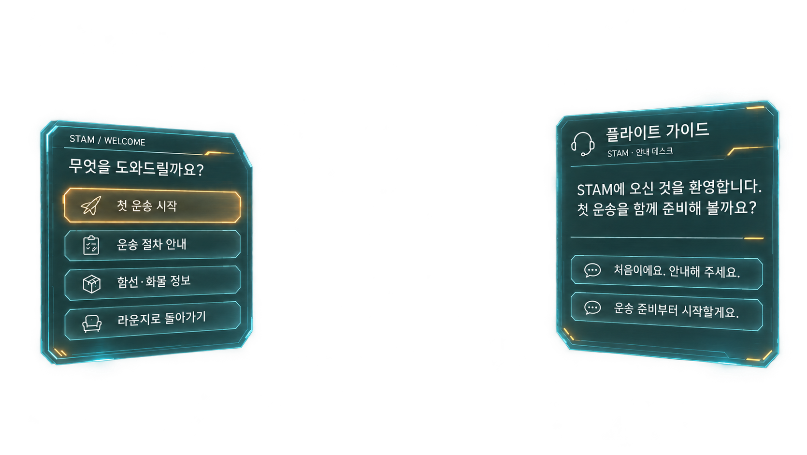

<!doctype html>
<html lang="ko">
<meta charset="utf-8">
<meta name="viewport" content="width=device-width,initial-scale=1">
<title>STAM 원본 패널 반투명 합성 검수</title>
<style>
*{box-sizing:border-box}body{margin:0;background:#061018;color:#edf8fc;font-family:system-ui,sans-serif}
.stage{position:relative;width:100%;aspect-ratio:1671/941;margin:0;overflow:hidden}
.approved-art{display:block;width:100%;height:100%;object-fit:contain}
.glass-blur{position:absolute;backdrop-filter:blur(1.5px) saturate(.8);pointer-events:none}.glass-blur.left{left:4.96%;top:26.25%;width:26.5%;height:54.4%;clip-path:polygon(4% 0,90% 5%,100% 19%,100% 91%,94% 97%,5% 100%,0 96%,0 5%)}.glass-blur.right{left:68.7%;top:22%;width:28.1%;height:59.3%;clip-path:polygon(4% 6%,95% 0,100% 4%,100% 96%,95% 100%,4% 93%,0 88%,0 10%)}.extracted-panels{position:absolute;inset:0;width:100%;height:100%;filter:url(#glass-transmission);pointer-events:none}.hit{position:absolute;background:transparent;border:0;padding:0;cursor:pointer;color:transparent;font:inherit}
.hit:focus-visible{outline:2px solid #fff0bf;outline-offset:3px}
.hit span{position:absolute;width:1px;height:1px;clip-path:inset(50%);overflow:hidden}
[data-action=mission]{left:7.7%;top:41.2%;width:22.2%;height:8.1%}
[data-action=guide]{left:7.7%;top:50.4%;width:22.2%;height:7.3%}
[data-action=information]{left:7.7%;top:58.5%;width:22.2%;height:7.5%}
[data-action=lounge]{left:7.7%;top:66.6%;width:22.2%;height:7.4%}
[data-action=help]{left:70.7%;top:56.3%;width:23.8%;height:7.8%}
[data-action=prepare]{left:70.7%;top:64.3%;width:23.8%;height:8.4%}
.review{padding:18px 24px;font-size:14px;line-height:1.6}.review p{margin:0 0 8px}
</style>
<svg aria-hidden="true" style="position:absolute;width:0;height:0"><defs>
 <filter id="glass-transmission" color-interpolation-filters="sRGB">
  <feColorMatrix in="SourceGraphic" type="matrix" values="1 0 0 0 0  0 1 0 0 0  0 0 1 0 0  .2 .6 .2 0 .55" result="transmission"/>
  <feComposite in="transmission" in2="SourceGraphic" operator="in"/>
 </filter>
</defs></svg>
<main class="stage" aria-label="사용자 승인 원본과 같은 패널·글씨 복원 검수">
 
 <div class="glass-blur left" aria-hidden="true"></div><div class="glass-blur right" aria-hidden="true"></div>
 
 <button class="hit" data-action="mission"><span>첫 운송 시작</span></button>
 <button class="hit" data-action="guide"><span>운송 절차 안내</span></button>
 <button class="hit" data-action="information"><span>함선·화물 정보</span></button>
 <button class="hit" data-action="lounge"><span>라운지로 돌아가기</span></button>
 <button class="hit" data-action="help"><span>처음이에요. 안내해 주세요.</span></button>
 <button class="hit" data-action="prepare"><span>운송 준비부터 시작할게요.</span></button>
</main>
<aside class="review"><p>승인 원본을 참조한 패널 분리본의 반투명 합성 검수입니다. 글씨는 이미지에 있는 글씨이며 다른 폰트로 바꾸지 않았습니다.</p><p>실제 앱 연결 전 검토본입니다. 유리의 어두운 면은 배경을 투과시키고 밝은 글씨·테두리는 선명하게 합성합니다.</p><output id="action" aria-live="polite"></output></aside>
<script>
document.querySelectorAll('.hit').forEach(button=>button.addEventListener('click',()=>{
 document.querySelector('#action').textContent='버튼 영역 확인: '+button.textContent.trim();
}));
</script>
</html>
